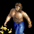
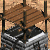
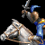
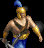
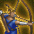
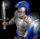
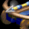
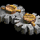

RM Brawl 1.27U Change Log (ROR 1.0a)
Below are shown all of the changes compared to Age of Empires Rise of Rome 1.0a.
Changes compared to Changes compared to AOE DE are written Here,
and changes compared to UPatch 1.1 R4 are written Here.
Civilization changes can also be found from the Tech trees page.
Patch 1.27U.N changes can also be seen in the list below.
Technology trees for patch 1.27U.N can be found from the mod files.
Comments
Economy
 Farm
Farm
Wood cost 75 -> 100
Food amount 250 -> 400
Replenishing farms was too micro intensive.
Farmer
Work rate 0.45 -> 0.4725
More expensive Government center is enough to prevent runaway boom.
Domestication
Food cost 200 -> 150
New bonus Farms, Storage Pits and Granaries cost -10%
Too expensive to be usable before 20 min.
 Plow
Plow
Food in Farms +75 -> +100
New bonus Farms, Storage Pits and Granaries cost -10%
Doing Plow right after all other upgrades have been done is now good for your economy.
 Irrigation
Irrigation
Food in Farms +75 -> +125
New bonus Farms, Storage Pits and Granaries cost -10%
Irrigation was only researched after all other Market upgrades were done and it’s bonus was too small to have any deciding value.
Tool Age
Requirement 2 Stone Age buildings -> Granary and Storage Pit
Having good enough map to go into Tool Age without Granary was already great advantage, not having to even build Granary was unnecessarily good bonus.
Starting with Storage Pit and going into Dock + Tool Age was too strong on water maps.
 Hunter
Hunter
Work rate 0.45 -> 0.4725
Accuracy 80% -> 100%
Hunting is harder than foraging and as so its reward should also be higher.
With 80% accuracy villager could die to one lion, this made early game scouting too dangerous.
Gazelle
Food amount 150 -> 180
Gazelles on big pack 6 -> 5
Now getting second pit with gazelles is easier.
Having extra gazelles instead of extras elephants isn't as bad now.
Gold Miner & Stone Miner
Work rate 0.45 -> 0.5175
With balanced bonuses the civilization specific units aren’t giving that much power compared to less gold costing units.
Using gold for units that you don’t have any bonuses is more viable.
 Fisherman
Fisherman
Work rate 0.6 -> 0.5175
Carry capacity 10 -> 20
Good storage pit position in water maps is rare but having that gives too strong start.
Now there is more possible storage pit positions but none of them too strong to give game deciding advantages.
 Dock
Dock
Work rate bonus at Stone Age +50% -> none
Early dock was accumulating food at a too high rate. In water maps having good stranglers gave too strong economy boost.
Map Changes
 All maps
All maps
Player spawn guaranteed one straggler close to the base
Lion spawn No longer double lion spawns on maps
Tool Age timings were too dependant on a decent straglers.
 All maps except Continental and Narrow
All maps except Continental and Narrow
Gold pile amounts per player 2 -> 3
There wasn't enough gold in maps to sustain late iron age fights.
 Hill Country & Highland
Hill Country & Highland
Old elephant spawn (12-0 distance) Spawn amounts 7+(1 per map size) -> 5+(1 per map size)
New Elephant spawn One Elephant for each player, Distance from TC 20-28
There needs to be always enough resources to do something more than 18 villager rush.
Fish Whale
Food amount 250 -> 300
At late game the water control wasn't important enough in a maps which players had access to others bases through land.
 Stone mine
Stone mine
Stone amount 250 -> 300
Gold was too sparse resource.
Gold mine
Gold amount 400 -> 450
Gold was too sparse resource.
Villagers
 Villager
Villager
Hit points 25 -> 35
Early aggression was too decisive and quick way to win a game.
 Linen Cloth( New technology)
Linen Cloth( New technology)
Requires Tool Age, Leather Armor Infantry
Stone cost 75
Gold cost 50
Research time 20 seconds
Research location Town Center
Effect Villagers +5 hit points and +1 armor base melee
Villagers died too fast. With even the smallest skill difference the games ended too fast.
Often late game civilizations that should only get to Iron Age at weaker state didn’t get there at all due to the importance of a singe military unit and the ineffectiveness of the defensive units.
 Wheel
Wheel
Villagers move 63,6% faster -> 60% faster (0.7 -> 0.66)
Research time 75s -> 90s
Available for all civilizations (enabled for Macedonian and Persian)
Wheel is a vital part of the game and needs to be available for all civilizations.
Siegecraft
Villagers bonus damage against towers and walls +30 -> +10
illagers were busting down towers and walls way too fast.
 Jihad -> Zealotry
Jihad -> Zealotry
Villager movement speed +0.3 -> +0.11
Villager bonus hit points +40 -> +30
Having 65 HP was high enough, no need to up it furthermore. The bonus HP should only make it easier to play with open base and not make villagers capable of fighting back without support.
Towers and walls
 Small wall
Small wall
Hit points 200 -> 120
Axemen and Cavalry were blocked out too effectively.
 Medium Wall
Medium Wall
Hit points 300 -> 250
Upgrade
Food cost 180 -> 260
Getting Medium Wall and sitting in your base until Iron Age was too easy way to avoid Bronze Age wars.
 Watch Tower
Watch Tower
Hit points 100 -> 125
Sentry Tower
Hit points 150 -> 185
 Guard Tower
Guard Tower
Hit points 200 -> 240
 Ballista Tower
Ballista Tower
Hit points 200 -> 240
Reload time 3.2 -> 2.7
Tool Age fights
 Scout
Scout
Food cost 100 -> 90
Hit points 60 -> 70
Line of sight 12 -> 7/9/11 (Tool/Bronze/Iron)
Scout wasn’t strong enough to fight against Tool Age units. And now with Villager changes it’s even harder to harass enemy workers because at least two Scouts is needed to have a sufficient effect on enemy economy.
 Slinger
Slinger
Movement speed 1.2 -> 1.1
Training time 24s -> 30s
Attack bonus vs Walls and Towers 7 -> 5
Attack bonus vs mounted archers 2 -> 4
Slingers were too strong against all Tool Age units.
Bronze Age fights
Cavalry
Hit points 150 -> 125
Pierce armor 0 -> 1
Cavalry had too little use after the initial rush.
 Camel Rider
Camel Rider
Movement speed 2.0 -> 2.2
Gold cost 60 -> 40
Attack bonus vs cavalry 8 -> 4
Camel riders had too short window of opportunity. Once the enemy had massed any other unit than Cavalry those Camel Riders become almost useless.
 Composite Bowman
Composite Bowman
Upgrade
Food cost 180 -> 360
Wood cost 100 -> 200
Composite bowmen are good units and with all other changes they are going to be even stronger.
High cost makes this a choice and not an automatic upgrade.
Short Swordsman
Upgrade
REMOVED
Having to research the unit pushed all barrack units too far back making them almost unusable at Bronze Age.
 Logistics
Logistics
Bonus removed Barrack units take ½ population
New bonus Barrack units move 20% faster, Barracks work 25% faster
Half population costing units cause path finding problems in team games. Having 3 or more Legion producing players in a full on 4v4 games caused the servers to lag.
Now Swordsmen can be used as a cheap harassing unit.
Legions are now weaker but can spike up faster than Centurions leaving them good enough advantage point.
 Mathematics (New technology)
Mathematics (New technology)
Requires Bronze Age
Food cost 120
Wood cost 60
Research time 50 seconds
Research location Government Center
Effect All siege units +1 range and LoS
Bronze Age aggression can be stopped too easily by creating Medium Walls, causing all players to go into Iron Age.
Now players can use Bronze Age units longer, giving civilizations with poor Iron Age better choices.
 Stone Thrower
Stone Thrower
Blast width 0.5 -> 0.7
Pierce armor 0 -> 2
Composite Bowmen were too reliable one unit defense.
 Academy
Academy
Wood cost 200 -> 150
The cost to get any hoplites was too high making it a late game unit only.
 Priest
Priest
Bonus damage taken from chariots 7 -> 0
Priests are expensive and countering them was too cheap.
Iron Age fights
 Heavy Cavalry
Heavy Cavalry
Armor base pierce 1 -> 2
Armor base melee 1 -> 2
Attack bonus versus infantry 5 -> 6
Swordsmen are stronger and Cavalry line needs to keep up with it.
Heavy Cavalry should works well as a surprise rush unit, but Bronze Age units were too strong to never give a change for Heavy Cavalry to be used.
 Cataphract
Cataphract
Hit points 180 -> 240
Armor base pierce 1 -> 3
Armor base melee 3 -> 5
Attack bonus versus infantry 5 -> 7
Upgrade
Food cost 2000 -> 1600
Gold cost 850 -> 600
Cataphract was too weak agaisnt all units.
Initial gold cost to use Cavalry line in Iron Age was too high.
 Scythe Chariot
Scythe Chariot
Armor base melee 2 -> 1
Blast width 2.0 -> 1.5
Upgrade
Wood cost 1200 -> 1400
Gold cost 800 -> 1000
Research time 150s -> 200s
Scythe Chariot were too strong. It is now easier to take them down if you have units to counter them.
 War Elephant & Armored Elephant
War Elephant & Armored Elephant
Blast width 2.0 -> 1.5
2.0 blast width was too huge.
 Elephant Archer
Elephant Archer
Attack base pierce 5 -> 6
Elephants Archers were winning fights only against few other ranged units and even then they were only barely winning the fights.
 Horse Archer
Horse Archer
Hit points 60 -> 75
Armor base pierce 2 -> 1
Horse Archer was too weak unit on a civilizations which didn't have access to the HHA upgrade.
Raiding isn't as effective as it used to be because of stronger villagers and better towers.
2 pierce armor made horse archers too strong and versatile pick.
Patch 1.27U.N Changes
Spearman (New Unit)
Requirement Tool Age
Training location Barrack
Food cost 30
Wood cost 20
Training time 36s
Stats:
Hit points 35
Attack base melee 3
Bonus damage vs mounted units 6
Slash armor 1
Weakness Infantry -7
Available All civilizations
Compared to Axeman.
Good unit against Scout. Shouldn't be strong against Cavalry.
With equal upgrades Cavalry kills Spearmen in 3 hits.
One armor makes this really strong against Scouts without being too good unit in overall.
Having defensive unit against Scouts ensures there is enough leeway in the Scouts kit to make them usable without being overpowered.
 Scout
Scout
Pierce Armor 0 -> 1
Hit points 70 -> 60
Can be better against Bowmen defense when there are other ways to counter the Scouts.
 Improved Slinger (Unit Upgrade)
Improved Slinger (Unit Upgrade)
Requirements Bronze Age, Logistics, Slinger
Food cost 120
Gold cost 50
Research time 60s
Effect:
Hit points 25 -> 35
Range 4 -> 5
Slash armor 0 -> 3
Now barrack units do not share same play style as Academy units but has instead its own play style allowing both Legion
and Centurion exist without extreme overlapping.
Archers shouldn't be only viable Late Bronze Age unit.
 Heavy Slinger (Unit Upgrade)
Heavy Slinger (Unit Upgrade)
Requirements Iron Age, Tower Shield, Heavy Slinger
Food cost 500
Gold cost 300
Research time 90s
Effect:
Hit points 35 -> 50
Slash armor 3 -> 5
Now mass Elephant and Horse Archers can be countered easier making them less suitable for all situations.
Archers shouldn't be only viable Late Bronze Age unit.
 Legion
Legion
Upgrade
Food cost 1000 -> 1400
With Heavy Slinger available the Barrack was stronger building. Legions needn't anymore the earlier timer to push against archers.
Recurve Bowman (Unit Upgrade)
Requirements Iron Age, Alchemy, Composite Bow
Food cost 900
Wood cost 600
Research time 150s
Effect:
Hit points 45 -> 50
Reload time 1.4 -> 1.12 (+25% attack speed)
Now that there is enough ways to counter Composite Bowmen they can have Iron Age upgrade without becoming viable
single unit strategy.
Transitioning from Bronze age Slow siege push to Iron Age is now far less punishing.
 Composite Bow
Composite Bow
Upgrade
Food cost 360 -> 500
With Iron Age upgrade there was no longer such a huge timer to do something. This made booming Composite Bowmen mass far less punishing.
 Heavy Camel Rider (Unit Upgrade)
Heavy Camel Rider (Unit Upgrade)
Requirements Iron Age
Food cost 1300
Gold cost 500
Research time 150s
Effect:
Hit points 125 -> 180
Attack base melee 6 -> 9
Attack bonus vs cavalry 4 -> 8
Slash Armor 0 -> 3
Pierce Armor 0 -> 1
Now all civilizations have access to good fast units in Iron Age, this allows all civilizations to go aggressive Iron Age plays.
 Camel Rider
Camel Rider
Bonus damage against elephants 4 -> 0
Shouldn't counter Elephant Archers or elephants, early on there is enough ways to deal with them.
 Scythe Chariot
Scythe Chariot
Attack base melee 9 -> 7
Armor base melee 1 -> 0
Upgrade
Wood cost 1400 -> 600
Gold cost 1000 -> 400
With other strong units available for all civilizations the Scythe Chariot needn't be a generic unit anymore.
Now it can be a dedicated siege counter stacked with late Iron Age strength and an early Iron Age archer counter.
 Improved Slinger
Improved Slinger
Available Babylonian, Berbers, Carthaginian, Choson, Egyptian, Greek, Macedonian, Minoan, Palmyra, Parthia, Persian, Phoenician, Roman, Scythia, Shang, Sumerian, Thrace, Yamato
Unavailable Assyrian, Hittite
 Heavy Slinger
Heavy Slinger
Available Carthaginian, Greek, Macedonian, Minoan, Parthia, Persian, Phoenician, Roman, Shang
Unavailable Babylonian, Berbers, Assyrian, Choson, Egyptian, Hittite, Palmyra, Scythia, Sumerian, Thrace, Yamato
Recurve Bowman
Available Babylonian, Egyptian, Macedonian, Minoan, Palmyra, Persian, Phoenician, Thrace
Unavailable Assyrian, Berbers, Carthaginian, Choson, Greek, Hittite, Parthia, Roman, Scythia, Shang, Sumerian, Yamato
 Heavy Camel Rider
Heavy Camel Rider
Available Berbers, Carthaginian, Egyptian, Hittite, Minoan, Palmyra, Phoenician, Scythia, Sumerian
Unavailable Assyrian, Babylonian, Choson, Greek, Macedonian, Parthia, Persian, Roman, Shang, Thrace, Yamato
Small Adjustments
 Farm
Farm
Build time 30s -> 24s
Having to transform into farms earlier than your opponent made you take too huge hit into your eco.
Farm, Storage pit, Granary
Max elevation difference 0 -> 1
Starting resources were too often placed in hard to gather places or in hills making them too slow to collect if there wasn’t any good spot for the deposit building.
Farms could take way too much space if the map was unfairly generated.
 Writing (Removed)
Writing (Removed)
The bonus is now available from the star of the game.
The lack of vision wasn’t funny or intriguing to play with but rather annoying. Having the vision at the start of the game allows better coordination which creates more enjoyable team play.
 Broad Swordsman
Broad Swordsman
Hit points 70 -> 80
Upgrade
Research time 80s -> 90s
 Camel Rider
Camel Rider
Bonus damage against elephants 0 -> 4
 Heavy Horse Archer
Heavy Horse Archer
Armor base pierce 2 -> 1
2 pierce armor made horse archers too strong and versatile pick.
 Catapult & Heavy Catapult
Catapult & Heavy Catapult
Pierce armor 0 -> 2
Blast width 1.5 -> 1.2
Preparing to use siege took too much resources and time. In combination with the easy to counter style of the siege units it was too easy to exploit siege units weaknesses.Faster projectile speed allows shooting fast units if you see them early enough.
Landing shots at slow units was too easy. Damage is now more reliable. With smaller max damage on Catapults Helepolis is better choice for some situations.
Long Swordsman
Hit points 80 -> 100
Upgrade
Food cost 140 -> 240
Gold cost 50 -> 100
Swordsmen are playing much bigger part in the fights and now the power reaches all the way to the late Iron Age making the available Swordsmen upgrades much more important.
 Legion
Legion
Upgrade
Food cost 1400 -> 1000
Legions were weaker with the changed Logistics.
 Aristocracy
Aristocracy
Effect Academy units move 25% faster -> 20% faster
Centurions were too good against all of it's counters creating too good one unit type army composition.
 Helepolis
Helepolis
Reload time 1.5 -> 1.85
Pierce damage 40 -> 45
Upgrade
Food cost 1500 -> 1200
1.5 reload time was too fast making late game revolve around Helepolis. Either use it or counter it.
 Catapult Trireme
Catapult Trireme
Hit points 120 -> 135
 Catapult Trireme & Juggernaught
Catapult Trireme & Juggernaught
Movement speed 1.35 -> 1.45
Gold cost 75 -> 50
Getting water control as civ with Catapult trireme is hard and the reward wasn’t good enough.
 Fire Galley
Fire Galley
Bonus damage taken from catapults 10 -> 0
Bonus damage taken from Ballista/Helepolis 5 -> 0
Unnecessary complication to otherwise clean bonus damage list.
Now that Helepolis has a base damage of 45 the +5 makes it too good against Fire Galleys.
Fire Galleys should be the strongest water units since they can not posses a good threat to land units.
 Watch Tower, Sentry Tower, Guard Tower & Ballista Tower
Watch Tower, Sentry Tower, Guard Tower & Ballista Tower
Build time 80s -> 72s
 Ballista Tower
Ballista Tower
reload time 3.0 -> 2.7
Projectile speed 4.5 -> 4.9
 Light Transport
Light Transport
Training time 75s -> 60s
Water rushes were hard to execute and with the increased villager hit points it was even harder.
Enabling transport ship at Stone Age would have been too strong.
 Heavy Transport
Heavy Transport
Carry capacity 10 -> 20
Training time 75s -> 60s
Loading and unloading units was both micro intensive and tedious.
Now players can jump islands much smoother at Iron Age.
 Scout Ship, War Galley & Trireme
Scout Ship, War Galley & Trireme
Training time 60s -> 70s
Rushing in water maps was too effective.
 Trireme
Trireme
Reload time 1.8 -> 1.89
Projectile speed 4.5 -> 4.9
Fire galley was rarely used due to dying so fast to the masses of Triremes. Now both Fire galley and Catapult Trireme are more relevant in the Iron Age water battles.
 Catapult Trireme & Juggernaught
Catapult Trireme & Juggernaught
Projectile speed 2.7 -> 3.1
Reload time 5.0 -> 5.3
 Juggernaught
Juggernaught
Blast width 1.5 -> 1.2
Projectiles no longer destroy trees.
Upgrade
Food cost 2000 -> 1300
Wood cost 900 -> 700
Research time 180s -> 200s
Ballista
Reload time 3.0 -> 2.7
 Ballista & Helepolis
Ballista & Helepolis
Projectile speed 4.5 -> 4.9
 Stone Thrower, Catapult & Heavy Catapult
Stone Thrower, Catapult & Heavy Catapult
Projectile speed 2.7 -> 3
Reload time 5 -> 5.375
Engineering
New requirement Mathematics
Effect All siege units +2 range and LoS -> +1 range and LoS
Max range should remain same.
 Martyrdom -> Sacrifice
Martyrdom -> Sacrifice
Gold cost 600 -> 400
Alchemy
Ballista/helepolis Bonus attack base Pierce +2 -> +1Civilization changes
 Linen Cloth
Linen Cloth
Available for all civilizations.
 Mathematics
Mathematics
Available for all civilizations.
 Coinage
Coinage
Enabled for all civilizations (Egyptian, Palmyra, Persian, Shang, Sumerian)
Now all civilizations have strong early/mid Iron Age without making turtling too effective playstyle.
 Heavy Transport
Heavy Transport
Enabled for all civilizations (Assyrian, Babylonian, Choson, Hittite, Palmyra, Shang, Sumerian)
Not having upgrade to Light Transport didn’t make the civilizations that much weaker, but was more of a slowing aspect due to the bad path fining when loading transport ships.
Enabling Heavy Transport for all civilizations allows smoother gameplay.
 Catapult
Catapult
Enabled for all civilizations (Carthaginian, Choson, Egyptian, Macedonian, Phoenician, Yamato)
 Unique Technologies
Unique Technologies
All civilizations will have one unique technology in Bronze Age.
Researched from Government Center, 60s research time, cost varies between three tiers.
Tiered Cost System
Tier 1 75F, 50G [5] (Carthaginian, Choson, Egyptian, Greek, Shang)
Tier 2 150F, 75G [7] (Assyrian, Babylonian, Berbers, Hittite, Parthia, Thrace, Yamato)
Tier 3 200F, 125G [8] (Macedonian, Minoan, Palmyra, Persian, Phoenician, Sumerian, Roman, Scythia)
Assyrian - Arson
Cost 150F, 75G
Effect Melee units deal +3 damage to buildings
Babylonian - Plain Bearing
Cost 150F, 75G
Effect All chariot units move 15% faster
Berbers - Smelting
Cost 150F, 75G
Effect Swordsmen and Legions +1 attack
Carthaginian - Panoply
Cost 75F, 50G
Effect All Academy units +30% HP
Choson - Fletching
Cost 75F, 50G
Effect All Archers +1 range
Egyptian - Dipylon Shield
Cost 75F, 50G
Effect Hoplites attack 20% faster
Greek - Levies
Cost 75F, 50G
Effect Swordsmen and bowmen cost wood instead of gold
Hittite - Mahawi
Cost 150F, 75G
Effect Camel Riders attack 20% faster
Macedonian - Dry Dock
Cost 200F, 125G
Effect War ships +1 attack
Minoan - Machicolation
Cost 200F, 125G
Effect Towers +2 attack
Palmyra - Vamplate
Cost 200F, 125G
Effect Academy units +1 slash armor
Parthia - Tusk Swords
Cost 200F, 125G
Effect All elephants +20% HP
Persian - Linothorax
Cost 150F, 75G
Effect All Barrack units +1 slash armor
Phoenician - Padded Armor
Cost 200F, 125G
Effect All barrack units +1 pierce armor
Roman - Bodkin
Cost 200F, 125G
Effect All bowmen ignore unit armor
Scythia - Lamellar
Cost 150F, 75G
Effect Archery Ranges work 20% faster
Shang - Husbandry
Cost 75F, 50G
Effect Stables work 33% faster
Sumerian - Phajaan
Cost 200F, 125G
Effect Stable units +1 attack
Thrace- Lead Bolts
Cost 75F, 50G
Effect Slingers +1 damage
Yamato - Chemistry
Cost 150F, 75G
Effect Siege units +10 damage
Berbers (new civilization)
New bonus Gets Linen Cloth upon entering Tool Age
New bonus Dock technologies are free
New bonus All units +25% blast width
Parthia (new civilization)
New bonus Aging up has no building requirements
New bonus All Government Center upgrades are available at Bronze Age
Scythia (new civilization)
New bonus Villagers benefit from armor upgrades
New bonus All units cost -20% gold
Thrace (new civilization)
New bonus Foragers work 25% more efficiently
New bonus Military buildings cost -20%
Assyrian
Bonus removed Villagers move 18% faster
Bonus Archers fire 36,4% faster -> 33% faster
New bonus Gets +60 food on age up
Technologies enabled Alchemy, Chain Mail, Engineering
Assyrian was too weak on water maps and at late Iron Age.
Babylonian
Bonus Towers and Walls bonus hit points +60% -> +75%
Bonus Stone Miners work 44,4% faster -> 20% faster
New bonus Builders work 33% faster
New bonus Storage Pit upgrades cost -40%
Technologies enabledTrireme, Metallurgy, Chain Mail
Carthaginian
Bonus Transport ships move 25%/42,9% faster -> 25% faster
Bonus removed Elephants and Academy units +25% bonus hit points
New bonus All archers have +15% HP
New bonus Counter units deal +50% bonus damage
New bonus Starts the game with +30 of each resource
Now Carthaginian has more reasonable power distribution.
Choson
Bonus removed Long Swordsmen and Legion +80 HP
New bonus Axeman, Short Swordsman, Broad Swordsman, Long Swordsman and Legion have +10/15/20/60/80 HP (respectively)
New bonus All ranged units benefit from shield upgrades
New bonus All stable units +1 slash armor
New bonus Farms and Houses have +75% HP
Technology enabled Nobility
Choson was too weak on water maps. it had no economy bonuses and it's other bonuses didn't contribute much to its weak navy.
Swordsmen are much easier to counter making it too easy to play against Choson. Now Choson has more choices at Bronze age and early Iron age giving it a good window of opportunity against other late and mid game civilizations.
Egyptian
Technology enabled Catapult
New bonus Aging up is 15 seconds faster
Egyptian chariots were way too good.
Without massive HP bonus to chariots Egyptian needs to rely more on its infantry and siege.
Greek
Bonus removed Academy units move 33,3% faster
Bonus 17% faster war ships -> 20% faster ships
New bonus Foot soldiers and siege workshop units move 5/10/20% faster at Tool/Bronze/Iron Age (respectively)
New bonus All cavalry units +10% HP
New bonus All buildings +5 Line of sight
Technologies enabled Improved Bowman, Metallurgy, Fire Galley
Greek was too unbalanced between water and land maps.
Greek late Iron Age was too strong whilst having too weak Bronze and Tool Age.
Hittite
Technology enabled Fishing Ship
Bowmen and CA were too strong with the +1 damage.
Now the Catapults can tank decent amount of damage and be used as shields in team games without being too strong in all of the trades.
Hittite isn’t strong enough on every water map to justify the missing fishing boat upgrade.
Macedonian
Bonus Siege Workshop units cost - 50% -> -25%
Bonus Academy units bonus pierce armor +2 -> +1
Technologies enabled Wheel, Catapult
Wheel is vital part of the game and needs to be unlocked for all civilizations.
Macedonian should have good options against heavy tower defense.
Minoan
Bonus removed Composite Bowmen +2 range
Bonus ships cost - 30% -> -15%
New bonus Houses support an additional +1 headroom
New bonus All unit upgrades cost -30%
New bonus Camel Riders +10% HP
Range bonus was too simple and straight forward bonus.
Without strong Iron Age war ships Minoan needs to use its strong water power at early.
Cheaper farms ensures that you have small economy bonus at early on even in land maps.
Palmyra
Bonus removed Villagers have +1 pierce/slash armor
Bonus removed Villagers work 33%/44% faster at all tasks
Bonus removed Tributes are free
Bonus removed Villagers cost 75
Bonus Camel Riders move 25% faster -> 15% faster
New bonus Tool Age market upgrades are free
Technologies enabled Plow, Logistics, Metallurgy
Normal starts were slow and easy to punish, but with a good elephant start Palmyra got it’s economy rolling very fast and was unstoppable.
Having population efficiency on villagers was hitting on the game setting versatility too hard.
Persian
Bonus removed Hunters work 66,7% faster
Bonus Triremes fire 38,5% faster -> 20% faster
Bonus Elephants move 55,6% faster -> 25% faster
New bonus Hunted animals grant 40% more food
New bonus All Temple technologies cost wood instead of gold
Technologies enabled Artisanship, Wheel, Plow, Ballistics
Technology disabled Heavy Horse Archer
Faster hunting speed alone makes food run out too fast. Now the hunting bonus is making animals last longer giving power towards the late game and not just at the start of the game.
Going into fast Iron Age and killing enemy foot soldiers with War Elephants was too strong strategy.
With 25% movement speed bonus Composite Bowmen are capable of running away from Elephants forcing Persian player to have mixed army.
Without Ballistics, Horse Archers and Elephant Archers were barely usable.
Phoenician
Bonus removed Catapult Trireme and Juggernaught fire 72,4% faster
Bonus Woodcutters work 9,1% faster -> 15% faster (carry capacity reduced from +3 -> +2)
Bonus All elephant units cost - 25% -> -20%
New bonus All Temple technologies give bonus HP to Priests (Max 95 HP)
Technologies disabled Catapult Trireme, Juggernaught
Technology enabled Metallurgy
Roman
Bonus buildings cost - 15% -> -10%
Bonus Swordsmen attack 50% faster -> 25% faster
Bonus Towers cost - 50% -> -40%
Roman economy allowed far better rushing than any other civ would.
Shang
Bonus Wall bonus hit points +100% -> +60%
Bonus removed starting food -40
New bonus 33% increased Town Centers and military buildings cost
New bonus Town Centers cost increase takes effect after Tool Age
Technologies enabled Ballistics, Trireme
Shang was able to grow economy and military too well together. Now when Shang wants to commit into military its economy growth is slowing down enough for other civilizations to catch up and to be able to match it at certain times.
With the better Architecture Shang had too strong mid Bronze Age military presence if it got few extra minutes to boom.
Sumerian
Bonus removed Villagers have +15 HP
Bonus Stone Thrower, Catapult, Heavy Catapult fire 42,9% faster -> 30% faster
Bonus Bonus food on Farms +250 -> +125
New bonus All units cost -10 wood
New bonus Can build farms at Stone Age
New bonus Villagers get +5 HP on age up
New villager upgrades are making Sumerian health bonus even more significant.
Having too many options for tank killing makes countering Sumerian too hard.
With Farm changes bonus food on Farms is more valuable and comes into play much earlier than it did before.
Catapults being only units to fight effectively against back line makes countering Sumerian easier.
Yamato
Bonus removed Villagers move 18% faster
Bonus All cavalry units cost - 25% -> -15%
Bonus ships have +30% HP -> +20% HP
New bonus Foragers work 5% faster
New bonus Towers fire 25% faster
Technologies disabled Catapult Trireme, Juggernaught, Engineering
18% faster villagers were too fast compared to Axemen.
Yamato had strong water control all the way from early Tool Age to Late iron age.
Yamato had too strong early Iron Age presence with the buffed Horse Archers.